June 2026
- Can someone annoint me? Can someone PLEASE annoint me?
- "I'm doing good in all the best ways" -- "good in all the best ways"
- She takes a photo of the child in the parking lot
- From now on, I will only say yes
- Yes!
- "Dazzled to distraction by potentials and their attending coulds," cooed June.
- I LOVE MELON
- seriously,. summer fruit makes me inordinately joyful. ohhhhtotrustinthesystemoftheseasonsandtoabidebyitsortofdrippingdownmychin
- "Growers of Living Color" so much,, depends upon, a bunch,,,, of bullshit....
- "Fits of writing, but how will it all haul hollow out. The eastern sky aflame with pitch, the western at noon under knees. And the separate rocks are green from pressure of dreaming. Dreams they will spur their grains into wheels of a sibilance leaning.
Core all lashed across the backforest lawn. The fire is in the spine. The door is open on blade of a tree takes star ice. And all of my pages bead wooden. Then what be the story I was bound to tell?" - MINE, Clark Coolidge
- GOUGE
- "When the lesson was over, we used to go up to the watermelon patch behind the garden. I split the melons with an old corn knife, and we lifted out the hearts and ate them with the juice trickling through our fingers." - from Willa Cather's My Antonia, quote for K
- "Do you know, Antonia, since I've been away, I think of you more often than of anyone else in this part of the world. I'd have liked to have you for a sweetheart, or a wife, or my mother or my sister -- anything that a woman can be to a man. The idea of you is a part of my mind; you influence my likes and dislikes, all my tastes, hundred of times when I don't realize it. You really are a part of me." - ibid
- A bird chased a bug // The bead popped
|
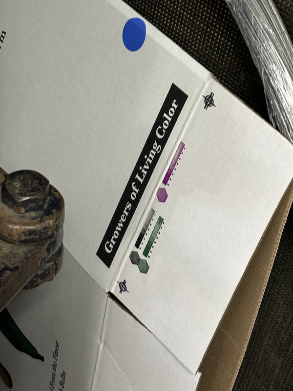
|
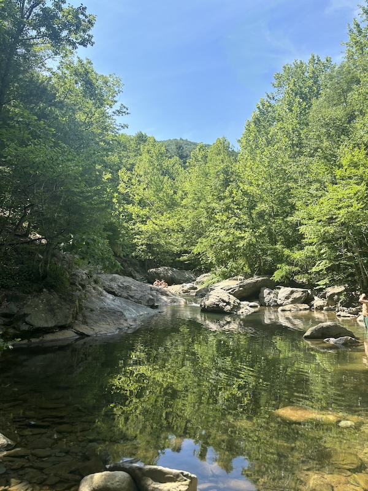 |
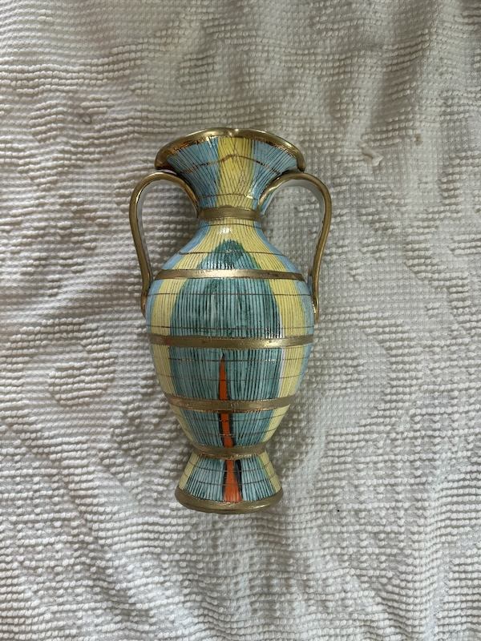 |
|
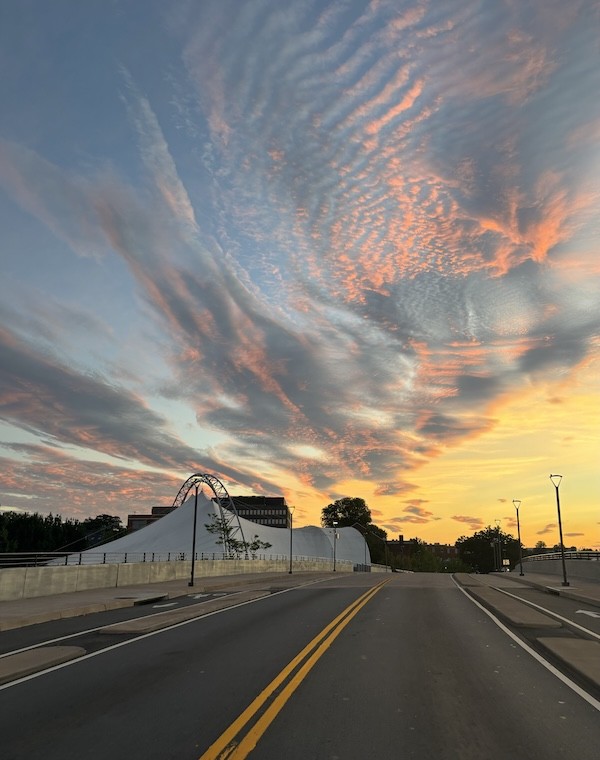
|
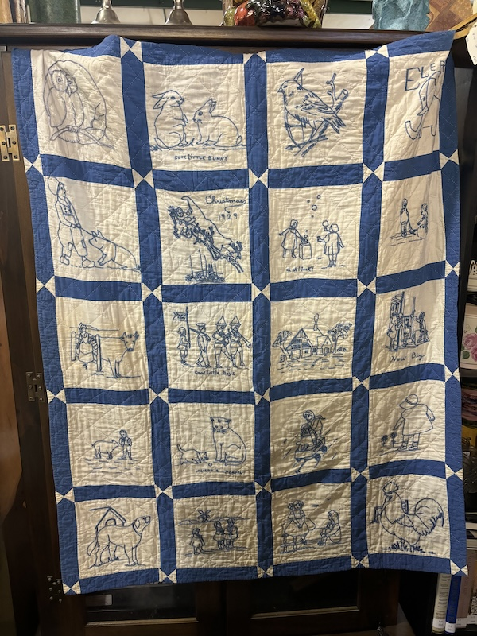 |
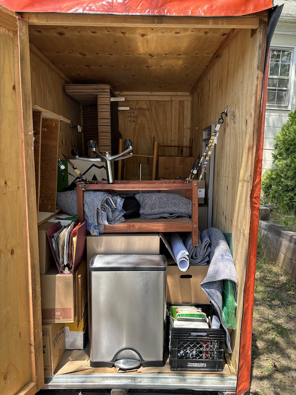 |
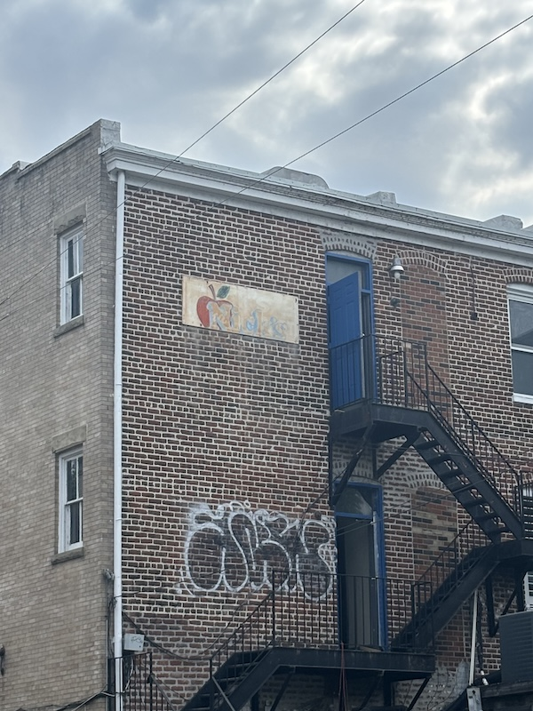 |
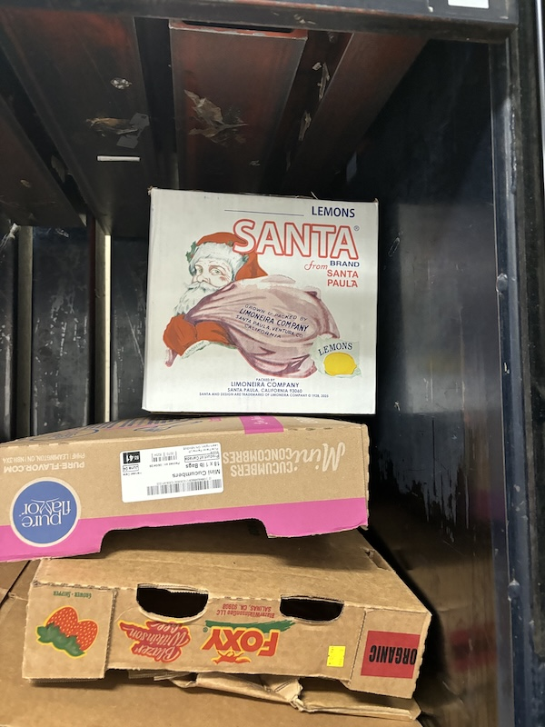 |
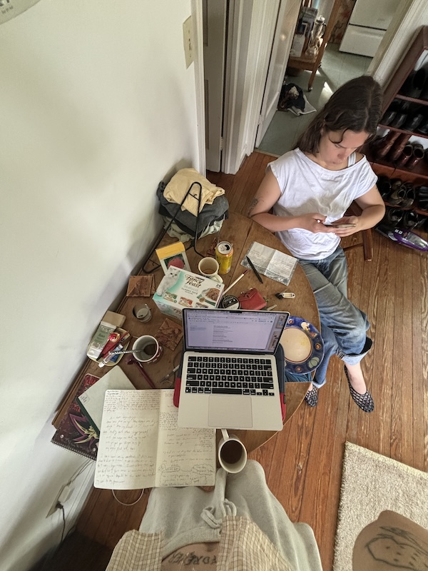
|
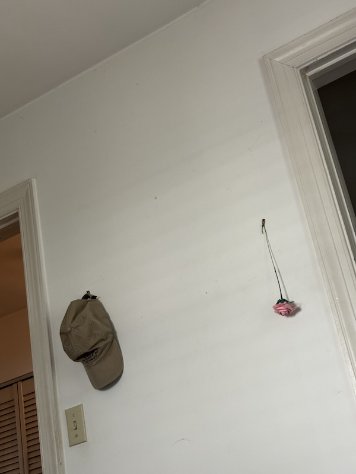 |
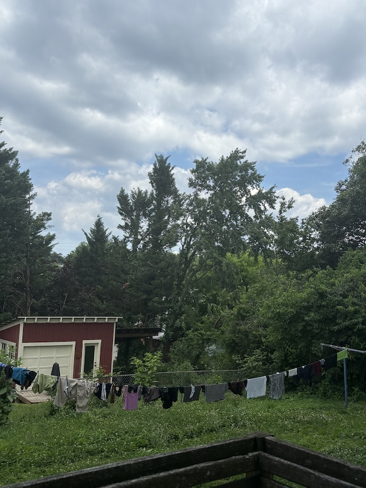 |
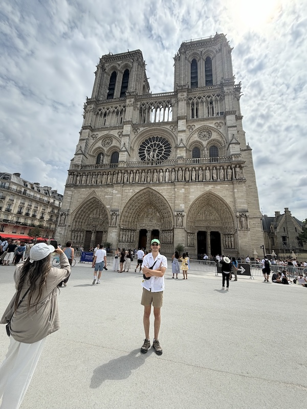
|